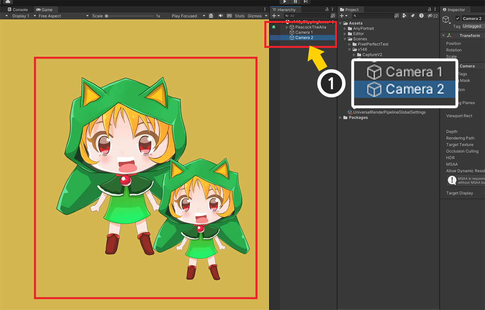
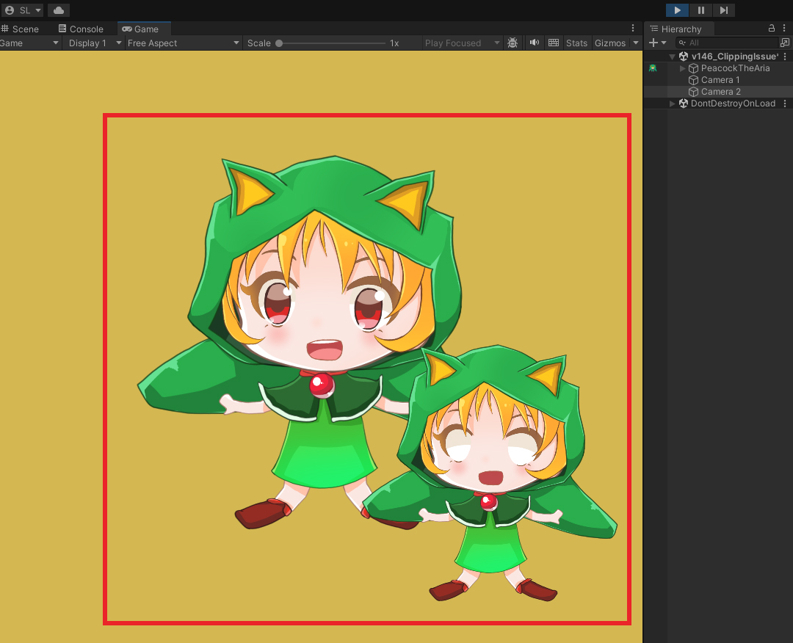

AnyPortrait > 메뉴얼 > 클리핑 메시가 렌더링되지 않는 문제
클리핑 메시가 렌더링되지 않는 문제
1.4.6
저희 팀이 사용자들로부터 많이 받았던 문의 내용 중의 하나는 클리핑 메시가 정상적으로 렌더링되지 않는다는 것입니다.
렌더링 문제는 겉보기에 동일한 문제라 하더라도 서로 다른 원인에 의한 것일 수 있기 때문에 해결하기가 쉽지 않습니다.
클리핑 메시에 관한 문제의 경우도, 서로 다른 원인이 동일한 문제를 야기시킬 수 있습니다.
이 페이지에서는 사용자들의 피드백을 바탕으로 대표적인 원인들과 그 해결법을 소개합니다.

이 페이지에서 사용되는 캐릭터입니다.
눈과 입의 메시들이 클리핑 메시로 설정되어 있습니다.
렌더 파이프라인 설정이 맞지 않는 경우
이 경우는 주로 URP를 사용했거나, 또는 기본(Built-In) 렌더 파이프라인으로 복구했을 때 겪을 수 있습니다.

유니티 에디터에서 Project Settings > Graphics > Scriptable Render Pipeline Settings에서 URP로 설정한 상태입니다.
URP로 설정한 후 재질 라이브러리를 이용해서 URP용 재질을 적용까지 합니다. (관련 페이지)

Bake를 하고 게임을 실행했는데 클리핑 메시가 렌더링이 되지 않습니다.

이 경우는 렌더 파이프라인 설정이 현재 프로젝트 설정과 맞지 않아서 발생했을 가능성이 높습니다.
(1) AnyPortrait 에디터에서 Bake 버튼을 누릅니다.
(2) Setting 탭을 선택합니다.
(3) Render Pipeline 설정을 현재 프로젝트의 설정에 맞는지 확인합니다.
URP의 경우엔 Scriptable Render Pipeline로 설정해야 하고, 기본 렌더 파이프라인을 사용한다면 Default로 설정해야 합니다.

Bake를 하고 게임을 실행하면 클리핑 메시가 정상적으로 렌더링되는 것을 볼 수 있습니다.
2개 이상의 카메라가 캐릭터를 렌더링하는 경우

(1) 씬에 캐릭터를 렌더링하는 카메라가 2개 이상이 되도록 만들었습니다.
위와 같이 2개의 카메라에 의해서 한개의 캐릭터가 2번 렌더링되는 것을 볼 수 있습니다.

이 상태로 게임을 실행하면, 하나의 카메라를 제외한 나머지 카메라들에서는 클리핑 메시가 정상적으로 렌더링되지 않습니다.
AnyPortrait의 클리핑 메시는 크지 않은 해상도의 Render Texture를 이용하여 최적화된 마스크를 생성하기 위해 카메라의 속성을 참조합니다.
그런데 만약 2개 이상의 카메라가 캐릭터를 렌더링하고자 한다면, 클리핑 마스크의 최적화 기능이 오작동을 일으키는 것입니다.
이 문제를 해결하기 위해서는 다소 예상 밖의 옵션인 VR 지원 기능을 이용해야합니다.
VR은 기본적으로 2개의 카메라가 동작하는 시스템인데, 마침 이 경우와 같기 때문에 적절한 해결 방법이 됩니다.
(VR 지원에 대해서는 관련 페이지에서 자세한 내용을 보실 수 있습니다.)

(1) Bake 다이얼로그를 엽니다.
(2) Setting 탭을 선택합니다.
(3) VR / Multi-Camera 옵션의 값을 Multiple Cameras로 변경합니다.
이제 Bake를 실행하면 문제가 해결됩니다.
하지만 이 상태에서는 안타깝게도 클리핑 메시의 최적화 기능이 비활성화됩니다.
따라서 낮은 해상도의 클리핑 마스크에 의해 렌더링 퀄리티가 낮아지는 문제가 발생합니다.

(1) 메시 그룹을 선택합니다.
(2) 클리핑 마스크가 되는 메시를 선택합니다.
(3) Mask Texture Size 속성의 값을 변경해서 클리핑 마스크의 해상도를 증가시킵니다.
보여지는 메시의 크기와 품질에 따라 결정해야하는데, 최적화 기능이 꺼진 경우엔 512나 1024를 사용하는 것이 퀄리티 측면에서 좋습니다.

Bake를 하고 게임을 실행하면 클리핑 메시가 제대로 동작하는 것을 볼 수 있습니다.
다중 카메라를 배치한 상태에서, 카메라들이 Render Texture를 대상으로 렌더링을 하는 경우엔 부차적인 이슈들이 더 있습니다.
이 경우엔 관련 페이지에서 자세한 정보를 확인하세요.
스크립트 실행 순서가 적절하지 않은 경우
AnyPortrait의 클리핑 마스크는 업데이트 루틴 과정에서 어떻게 그려질지 계산됩니다.
그 계산은 카메라와 캐릭터의 위치, 속성 등을 참조합니다.
만약 업데이트에서 마스크 관련 계산을 할 때와 실제로 렌더링이 될 때의 관련 요소들의 상태가 일치하지 않는다면, 클리핑 마스크 및 메시가 정상적으로 렌더링되지 않을 가능성이 있습니다.
특히 유니티의 Cinemachine을 사용하는 경우엔 사용자도 모르게 이 문제를 겪게 됩니다.
이 문제를 다루는 메뉴얼이 별도로 있으므로, 그것을 참조하면 되겠습니다.
- 다른 에셋과 연동시 실행 순서 문제